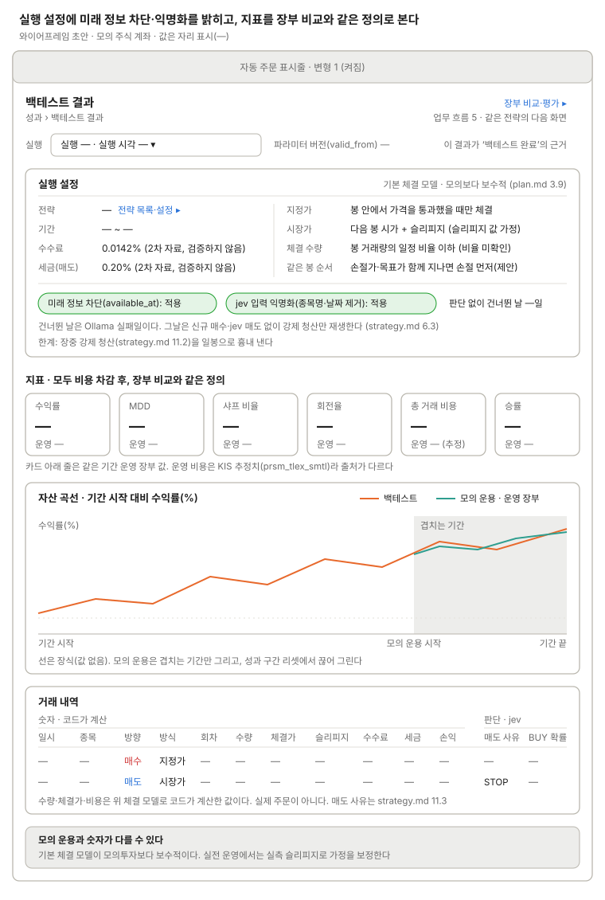

백테스트 결과
자산 곡선, 거래 내역, 모의 운용과 비교(Recharts). 체결 모델 설정을 결과 위에 두어, 모의 운용과 숫자가 다른 이유를 같은 화면에서 읽게 한다.

실행 설정에는 체결 모델과 함께 미래 정보 차단(available_at)과 jev 입력 익명화(종목명·날짜 제거, strategy.md 6.3) 적용 여부, 판단 없이 건너뛴 날 수를 보인다. 수수료 0.0142%·매도세 0.20%는 2차 자료라 "검증하지 않음"으로 표시한다. 지표는 모두 비용 차감 후이고 장부 비교와 같은 정의(수익률·MDD·샤프 비율·회전율·총 거래 비용)에 승률을 더해, 카드마다 같은 기간 운영 장부 값을 나란히 둔다. 자산 곡선에 겹친 모의 운용은 운영 장부이고, 겹치는 기간만 그리며 성과 구간 리셋에서 끊는다. 거래 내역은 코드가 계산한 숫자(회차·수량·체결가·슬리피지·수수료·세금·손익)와 jev 판단(매도 사유, BUY 확률)을 나눠 보인다.
쓰는 공통 UI
화면 틀 · 자동 주문 표시줄 (변형 1 켜짐) · 상태 표시명 (전략 상태 "백테스트 완료")
상태
| 상태 | 보일 것 |
|---|---|
| 계산 중 | 진행률을 보이고 지표 카드·곡선·거래 내역은 비워 둔다. 이전 실행 값과 섞지 않는다 |
| 실패 | 실패 이유와 다시 실행 버튼. 지표는 비우고, 이 실행은 "백테스트 완료"의 근거로 쓰지 않는다 |
| 데이터 부족 | 백필 빈 구간·상장 전 기간을 곡선에 음영으로 표시하고 실행 설정에 빈 날 수를 적는다(제안) |
| 거래 0건 | 지표는 "—", 거래 내역 자리에 "거래 없음". 판단 없이 건너뛴 날 수와 함께 본다 |
| 비교할 모의 운용 없음 | 카드 아래 운영 값은 "—", 곡선은 백테스트만 그리고 "겹치는 모의 운용 기간 없음"을 적는다 |
화면 규칙
- 보여 줄 것: 수익률, MDD, 승률, 거래 내역, 체결 모델 설정
- 주의: 기본 체결 모델이 모의보다 보수적이라 모의 운용과 숫자가 다를 수 있다